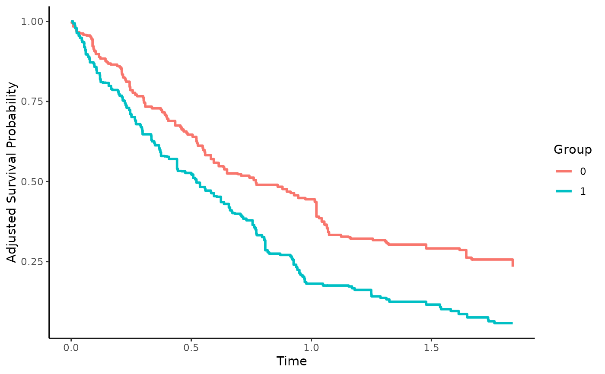

Proximal Inverse Probability of Treatment Weighted Survival Curve Estimates
surv_prox_iptw.RdThis page explains the details of estimating inverse probability of treatment weighted survival curves using a proximal causal inference based method for single event time-to-event data (method="prox_iptw" as described by Ying et al. (2022) in the adjustedsurv function). All regular arguments of the adjustedsurv function can be used. Additionally, the treatment_proxy, outcome_proxy and adjust_vars arguments have to be specified in the adjustedsurv call. Further arguments specific to this method are listed below.
Arguments
- adjust_vars
[required] A character vector specifying names of variables in
data. These variables may consist of observed confounders. At least one variable has to be named. Corresponds to \(X\) (type 1 proxy) in the article by Ying et al. (2022).- treatment_proxy
[required] A single character string specifying the variable that should be used as a treatment proxy. Corresponds to \(Z\) (type 3 proxy) in the article by Ying et al. (2022).
- outcome_proxy
[required] A single character string specifying the variable that should be used as a outcome proxy. Corresponds to \(W\) (type 2 proxy) in the article by Ying et al. (2022).
- optim_method
A single character string passed to the
methodargument of theoptimfunction, used internally when fitting the q-confounding bridge function. Defaults to"BFGS". To pass additional argument to the internaloptimcall, see argumentoptim_control.- optim_control
A list of named arguments passed to the
controlargument of theoptimfunction, used internally when fitting the q-confounding bridge function. Set tolist()to not pass any additional argument (default).- return_fit
Whether to add intermediate results, such as the q-confounding bridge function to the output object. Defaults to
TRUE.
Details
Type of Adjustment: Uses the proximal causal inference framework to adjust for measured and unmeasured confounding through the q-confounding bridge function, which is essentially inverse probability of treatment weighting, but using proxies.
Doubly-Robust: Estimates are not Doubly-Robust.
Categorical groups:
variablemay only contain two groups. Must be a factor variable.Approximate Variance: Calculations to approximate the variance and confidence intervals are available.
Allowed Time Values: Allows both continuous and integer time.
Bounded Estimates: Estimates are guaranteed to be bounded in the 0 to 1 probability range.
Monotone Function: Estimates are not guaranteed to be monotone.
Dependencies: Depends on numDeriv and the dependencies of that package.
This method is based on the proximal causal inference framework, first introduced by Miao et al. (2018) and later extended to allow for estimation of counterfactual survival curves by Ying et al. (2022). It allows the estimation of the treatment-specific counterfactual survival curve under unmeasured confounding, when the true data-generation mechanism has a particular structure. In particular, there must be an observed variable (contained in the dataset) that is a potential cause of the treatment (variable) and also unrelated to the time-to-event endpoint, except through measured confounders (adjust_vars) and a particular known but unmeasured confounder. This type of variable is called a treatment_proxy. Secondly, there must be another observed variable that directly or indirectly causes the outcome, but is unrelated to the treatment expect through measured confounders and the same known but unmeasured confounder as mentioned earlier. This type of variable is called an outcome_proxy. A better explanation is given by Zivich et al. (2023). More information on the underlying assumptions can be found in the papers listed in the references.
Ying et al. (2022) proposed two methods to utilize this kind of structure for the estimation of the counterfactual survival curve. The one implemented here relies on estimating the q-confounding bridge using a parametric model. This essentially means that it uses the treatment-assignment mechanism to adjust for confounding, similar to a regular inverse probability weighted estimator.
Value
Adds the following additional objects to the output of the adjustedsurv function:
noncensor_cumhaz: The estimated cumulative hazard function.noncensor_cumhaz_IF: The influence function based on the estimated cumulative hazard function.q_bridge: Alistcontaining results from fitting the q-confounding bridge function.
References
Andrew Ying, Yifan Cui and Eric J. Tchetgen Tchetgen (2022). "Proximal Causal Inference for Marginal Counterfactual Survival Curves". arXiv:2204.13144
Wang Miao, Zhi Geng and Eric J. Tchetgen Tchetgen (2018). "Identifying Causal Effects with Proxy Variables of an Unmeasured Confounder". In: Biometrika 105.4, pp. 987-993.
Paul N. Zivich, Stephen R. Cole, Jessie K. Edwards, Grace E. Mulholland, Bonnie E. Shook-Sa and Eric J. Tchetgen Tchetgen (2023). "Introducing Proximal Causal Inference for Epidemiologists". In: American Journal of Epidemiology 192.7, pp. 1224-1227.
Eric J. Tchetgen Tchetgen, Andrew Ying, Yifan Cui, Xu Shi and Wang Miao (2020). "An Introduction to Proximal Causal Learning". arXiv:2009.10982
Author
Andrew Ying wrote all of the low-level estimation functions used to actually obtain the relevant values. Robin Denz wrote some wrapper functions around those to include this method in this package.
Examples
library(adjustedCurves)
#### generate some example data that fufill all assumptions ####
# code was taken from the github repository associated with the original
# paper by Ying et al. (2022): https://github.com/andrewyyp/Proximal_MSF
# simulation parameters
para_set <- list(mu_X = 1.1,
sigma_X = 0.75,
mu_U = 1.1,
sigma_U = 0.75,
alpha_A = c(0.3, 0.4, -0.6),
mu_Z = c(-0.2, -0.3, 0.65),
sigma_Z = 0.5,
mu_W = c(-0.6, 0.4, 0.65),
sigma_W = 0.5,
mu_T0 = c(0.1, 0.6, 0.25, 0.5),
mu_C = 0.2,
admin_C = 2
)
# small function to obtain the required data
data_gen <- function(N, para_set, a = NULL) {
# generate X, U
X <- para_set$mu_X + rnorm(N, 0, para_set$sigma_X)
U <- para_set$mu_U + rnorm(N, 0, para_set$sigma_U)
X <- pmax(X, 0)
U <- pmax(U, 0)
if (is.null(a)) {
# generate A
prop_score_0 <- 1/(1 + exp(-cbind(1, X, U) %*% para_set$alpha_A))
A <- rbinom(N, 1, prop_score_0)
} else {
A <- rep(a, N)
}
# generate Z
Z <- cbind(1, X, U) %*% para_set$mu_Z + rnorm(N, 0, para_set$sigma_Z)
# generate W
W <- cbind(1, X, U) %*% para_set$mu_W + rnorm(N, 0, para_set$sigma_W)
#generate Y
T0 <- rexp(N, rate = cbind(1, A, X, U) %*% para_set$mu_T0)
C <- rexp(N, rate = para_set$mu_C)
C <- pmin(C, para_set$admin_C)
if (is.null(a)) {
df <- data.frame(X, U, A, Z, W, T0 = pmin(T0, C), Delta = (T0 <= C))
} else {
df <- data.frame(X, U, A, Z, W, T0 = T0, Delta = rep(1, N))
}
return(df)
}
#### Simple example ####
set.seed(4356)
data <- data_gen(N=300, para_set=para_set)
data$A <- factor(data$A)
if (requireNamespace("numDeriv")) {
library(numDeriv)
adj <- adjustedsurv(data=data,
variable="A",
ev_time="T0",
event="Delta",
method="prox_iptw",
adjust_vars="X",
treatment_proxy="Z",
outcome_proxy="W",
conf_int=TRUE)
plot(adj, iso_reg=TRUE)
}
